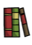

{kind=link}
{kind=link}
{kind=link}
{kind=link}
{kind=link}
{kind=link}
{kind=link}
{kind=link}
{kind=link}
{kind=link}

Food galore!
Applicable to Hungry for your Hunger update. Thanks to Klei Forum Members and various Wikia Contributors: Spazmatic, Rabbitfist, Lexicroft, Jbeetle, TeoSS69, Carbon Coded and Roud72
Marsh Camp Guide (concised version) by Jhepong
|  | This article may contain instructional language and subjective recommendations. Readers should identify the content clearly. You can help by rewriting text from an objective point of view and trimming instructions. |
Happy Marsh Camping!!! =)
Welcome to the Swamp!!!
Also known as the Swamp, the marsh is considered the most hostile Biome, and the scariest place a new player can be. Not only does it lack raw material supplies; its inhabitants pose great threat to whomever braves its grounds. Being home to Tentacles, Merms and Spiders, the Marsh proves to be a common graveyard for the unprepared. Masked by all this danger and by its lack of natural resources, the Marsh is actually a place of abundance, and security from massive and powerful invasions.
These are the advantages of having your base camp in this area:
Respect the Marsh's "Law of Nature
"How many times do I need to tell you that it's not a walk in the park." Now now, why did you die?
RESISTANCE IS LOOT-ILE. I know seeing all that loot just makes your eyes bulge wide with greed. Remember, it's on the ground for a reason, even if that reason is not immediately apparent.
MEAT EFFIGY BEFORE CURIOSITY. Maybe you're the new kid in town, or just an explorer passing by. I care not. But, whoever you are, value your life more than your curiosity.
TOO MUCH CONFIDENCE KILLS THE RAT. So you're strong and heavily armored; and they don't call you the Deerclops Hunter for nothing. A word of advice: "The swamp bows to no one."
Map showing a small Marsh NOT suitable for base camp
If you look in your Map, the brown or mud-colored areas are the Marsh Biomes. They can be randomly allocated in different shapes and sizes, joined or separated by other Biomes, and may also contain narrow streaks or small islands of Forests. They may even be found scattered in different parts of your World.
Hence, what you are really looking for is a large sized Marsh. Though, the secret to finding the best Marsh is actually the one with the greatest number of Rundown Houses. These are single-door hut-like structures where Merms spawn. You can easily find and count them as they are marked in your Map as yellowish hut icons. Do not confuse them with Pig Houses, which are the brownish hut version.
In the Heart of the Marsh...
Once you have found the right Marsh, you are now ready to find the sweet spot in that vast dangerous area. However, I suggest that you should wear at least a Grass Suit when exploring the Marshes. The first thing that you need to look for is a Road, which sometimes pass through Forest islands. Next, open your map, and analyze the positions of Rundown Houses. You want to settle at a single spot by the road and surrounded by most number of Rundown Houses.
If you landed in a pure Marsh Turf area, then that would be just fine. Just be wary of Mosquito Ponds since they spawn Mosquitoes when Dusk arrives. And also, some parts in this area may be heavily infested with Spider Nests and hidden Tentacles. If you found your perfect spot near one or many of these, then you better get rid of them or move further. But during the early days, it is better to just settle at a safe distance from them.
When the going gets tough... Sometimes you just have to... RUN
Once you have laid down your basic camp structures for a Base Camp, it is now time to equip yourself a bit of protective gear, which is of utmost importance for your survival in this hostile region. During the early days, it is better to wear head Armor than chest Armor; because during these stages you will mostly be gathering Natural Resources to improve your Base Camp (such as digging for Saplings, Spiky Bushes and Grass Tufts, and collecting Pine Cones to plant Evergreens). So a Backpack gives you the most advantage.
You can acquire Pig Skins (to craft Football Helmet) in a Marsh Biome by looking for Pig Heads which usually stand along Roads, near Rundown Houses, or inside a Merm Village (a group of Rundown Houses). Pig Heads can be hammered to produce two Pig Skins and two Twigs. Your most helpful piece of equipment in this area is a Walking Cane. Its speed boost is all you’ll ever need for evasive maneuvers and faster travel.
Once you’re ready to gather food and resources, your destinations are already marked on your map. These are the Rundown Houses and the Spider Nests. But before you set off, you may want to plan your route to minimize your time and maximize your area coverage. Also, some of your destinations may be further away, and bringing in necessary materials is extremely helpful for your survival and maximum efficiency.
OPTIONAL:
For inexperienced players: please DO NOT BRING Chester with you. He may provide more inventory space, which in turn gives you a chance to wear various Armor or Clothing, however Chester is also very good at attracting Mobs. Soon you'll find yourself constantly running, evading and getting hit. Worst case, you'll be dead before sunrise.
If you're having problems staying Sane, just build a Tent in your Base Camp. Tents are highly renewable, since Silk can be found in great quantities just littered throughout this Biome.
For new players, moving through this Monster infested area might easily put them to panic, and worse when they witness the events that typically occur in this Biome, which include random battles between different monsters like Merms vs Tentacles, Tentacles vs Spiders and Spiders vs Merms. And these are all natural. In fact, such day to day happening is the single most important aspect for a player’s survival in this region, because these Mobs will be the player’s main food sources for all time. Casualties from these random battles will drop loots including Food, and there you shall come in.
As effortless as it may seem, but picking those food and loots on the ground gives you an immediate danger. As you pick them up, you should always be ready for an incoming attack, commonly caused by Tentacles and your usual looting competitor, the Spiders.
You may want to try this sample setup which gives you efficiency on food production:
Mini Kitchen: 1 Bird Cage, 1 Ice Box and 2 Crock Pots
Note: In relation of food availability to the Food sources in a Marsh Biome: the more Mob deaths each day, the more food readily accessible. And the more food readily accessible, the more Food Structures you'll need to process the number of raw food supply.
Marking this mushroom source in my map.
You can easily find Mushrooms growing in this region. The most common are Blue Mushrooms. You may also find a Mushroom Set Piece, several Mushrooms formed in a wide circle. If you want to gather them in a regular basis, it is best to mark them on your map by placing a Sign (also Backpack, Piggyback, Tree, Grass, Sapling, Spiky Bush, Berry Bush etc.). Mushrooms grow quickly during Rainy days. (best in "A Cold Reception Adventure Mode")
Rot, your alternative fertilizer.
As for farming, it is impossible to place Basic Farm or Improved Farm Structures on a Marsh Turf. You can either place your Farms in a different Biome or replace Marsh Turfs with other farmable turfs using a Pitchfork; though it is possible to plant Saplings, Grass Tufts, Berry Bushes and even Flowers on Marsh Turfs all with normal effects as if planted on other Turfs.
As for Fertilizers, another substitute for Beefalo Manure that can be gathered in this region are Pengull Manure (during Winter) and rotten Food, better known as Rot . Since random battles occur everytime you may not be able to pick all those food on the ground that will eventually turn to Rot, unless eaten by certain Mobs such as Spiders, Hounds, Pengulls (during Winter), Pigs /Werepigs and Batilisks. Also take note that Pigs/Werepigs eat Rot.
There are lots of strategies for a Marsh Biome that can constantly supply players with more than enough food . The moment you visit this Biome, you would easily find out that Tentacles are your major food and resources supplier during the early days of your survival. Notorious for their powerful surprise attacks and large health, there's no doubt about Tentacles being responsible to the majority of death in a Marsh Biome. They may be that strong, unfortunately, as of "Strange New Powers" update, the Tentacles are still one of the finite Natural Resources; which means they can go extinct in your World. Still, there are other strategies that does not require the help of Tentacles to provide constant food and resources. How to make Tentacles infinite can be found in Section 8. Other food farming strategies can be found in the Tips and Hints section.
Food galore!
Monster Meat, Fish & Frog Legs. The easiest and readily observable strategy for constant Food supply is the acquisition of Monster Meat and Fish & Frog Legs. Hence, with the help of a Bird Cage and a Crock Pot, they easily become your staple Food in the Swamps.
Silk, Spider Gland, Tentacle Spike & Tentacle Spot.. These are your most common loot in the Swamps. Of course, the more Mobs you fill in, the more loot types you'll get.
Carrot, Bunny Puff, Meat, Pig Skin & Beard Hair. These are your secondary loot, meaning: they are not found naturally in this region (except for Pig Houses that may spawn in or near a Marsh Biome). Player intervention is primarily required to get these as regular supply. Mobs responsible for these are Bunnymen, Beardlords and Pigs.
Spiders vs Tentacles. During the early days, the most common source of Monster Meat in this region are the Spiders. Random battles between these monsters are a natural day to day happening here. And Tentacles are responsible for the majority of Spider casualties in a Marsh Biome. Because of this, Silk and Spider Glands also litter much of the area. The first step to starting your own Monster Meat/Silk/Spider Gland Farm in this early stages is by acquiring Spider Eggs from areas you have no use for by destroying Tier 3 Spider Dens or killing Spider Queens. Then plant them to your desired location where Tentacles are present.
Best location for early spider loot source.
Planting Spider Eggs between two or more adjacent Tentacles is an effective tactic that produces more Spider casualties and more Spider drops in no time. Unfortunately, picking them up also becomes more dangerous as well. That is what your Walking Cane is for.
Another disadvantage though: if a single Spider managed to survive the gang war, with all the attacking Tentacles - dead, that lone Spider will quickly eat up all the Food loots scattered in the vicinity; unless you pick up all the food first or kill the Spider first. There's a fast and better strategy on how to start a clash between Spiders and Tentacles. See Tips and Hints section.
Spider vs Merms. You can now have the best Monster Meat / Silk / Spider Gland Farm for all time with the help of the Merms. This strategy best describes the true meaning of Everyday-Eat-All-You-Can-Monster-Meat for only $9.99. The first step is gathering enough Spider Eggs. Next, plant the Spider Eggs in the middle of those neighboring Rundown Houses. Once both parties meet, it will certainly be an all-out war.
Things You Should Know:
Mini Spiders vs Merms Farm: 1SpiderDenTier1 and 3RundownHouse
Advantages:
Disadvantages:
Spider Hunting. Sometimes, hunting Spiders yourself is much more efficient in acquiring their loot; since, it isn't always that they trigger a fight against Tentacles for these reasons: either all nearby Tentacles are dead, or they're just moving past the Tentacles without ever getting hit. However, if you do not fully understand the nature of your enemy, attacking them could be the beginning of your own demise. See "Spider" page for more tips.
Tentacle Hunting. Tentacles have a 20% chance to drop a Tentacle Spot, 50% Tentacle Spike, and absolute drop of 2 pieces of Monster Meat. Oh please don't hunt Tentacles, they are your friends!Actually, you don't need to hunt Tentacles for their Monster Meat, Tentacle Spike or Tentacle Spot, because, in these region, Tentacle deaths occur almost everyday. Besides, they are hard to kill; but if you have time to observe their movements, a lone Tentacle is actually an easy prey. See "Tentacle" page for more Tips.
Merms vs Bunnymen.. The best way to actually start this kind of Farm is placing Rabbit Hutches together with those already built Rundown Houses. Together, Bunnymen and Merms will go for a battle frenzy. Such Bunnymen's unique characteristic to transform to Beardlords gives players a choice of specific loots to scatter around. Since casualties from both parties are inevitable, drops will definitely be a hundred percent.
Things You Should Know:
Advantages:
Disadvantages:
Merms vs Tentacles: Early food source.
Don't you ever hurt my tentacle!
Another secondary loot that can be farmed infinitely here are the Pig's Meat and Pig Skin. And of course, they are dropped by Pigs, which live in Pig Houses, that are also much easier to craft than Rabbit Hutches. Just like Bunnymen's Farm, just place Pig Houses right beside Rundown Houses, and soon there will be fights.
Things You Should Know:
Mini Pigs vs Merms Farm: 2PigHouse and 1RundownHouse
Advantages:
Disadvantages:

Let's go Fishing! =)
Another unlimited source of food, specifically Fish, can be acquired through fishing. And the Marshes basically contain a good number of Ponds. However, the Ponds found in this region spawn Mosquitoes, instead of Frogs, during Dusk and eventually return when morning arrives. And that's why they are called Mosquito Ponds. You will have no problem crafting Fishing Rods here since the whole Marsh is your Silk farm.
A good strategy is to go fishing during Day time and go back at you camp when Dusk arrives. Though, if you still wanted to go fishing at Dusk or even at Night, the Mosquitoes that spawn aren't actually much of a hazard. However, they move extremely fast and there's no way you can catch up by running. The easiest way is to use a Bug Net to catch them the moment they approach you. If you don't want to use a Bug Net, a good melee tactic is to ready yourself for a counter-attack. Yes, let it bite you and the moment it gets near, give him your best combo because mosquitoes can be stunlocked.
Tentacles. As you may learn, Tentacles are your best food supplier especially during the early days of encampment, since they provide most Mob casualty therefore producing most Mob drops. Unfortunately, Tentacles are finite Monsters and may go extinct.
It is only vital to preserve their population for as long as you can, or until you finished setting up unlimited food and resource farms for a late game.
As for early days of encampment, it must be your duty to help clear their attackers as long as you're not putting yourself in too much danger.
Nonetheless, even if you do not take measures to preserve Tentacle population, they may still be around your base camp for around 200 days or more, since their numbers and map distribution are randomly generated for every World.
Rundown Houses. Other than Tentacles, Rundown Houses are finite structures, therefore, avoid destroying them or protect them from Deerclops. The Merms they regularly spawn are infinite sources of food.
Poor tentacle...
(soon to add photo)
Reed trap vs deerclops.
When Deerclops is hissing, DON'T PANIC. Quickly equip a Logsuit if you have one, and go to the Set Piece called Hundred Reeds Trap. Unfortunately, not all Worlds have this set piece.
Be patient but prepared. When the Deerclops arrive, it may be attacked by other tentacles away from the hundred reed trap. It will most likely win 1-on-1 against any creature. After it killed its target, you will have to provoke it and lure it to the ever-so dangerous Hundred Reeds Trap.
Tentacles are slower and you can outrun their attacks, while deerclops can't.
A large group of Tentacles always wins, so you don't have to worry. Being hit by tentacles is the thing you should be worrying about.
So you may want to call the Reed Trap Set Piece to be an Ultimate Safe Room. If you want to take Deerclops Eyeball, quickly grab it and run away. But taking his Meat drops would be risky as your greed will want to pick them all up in one run.
Most of the time when you venture into the Swamps you may encounter Set Pieces. There are lots of varieties of these - some beneficial and some contains tricks. If you do not know what you are seeing, then you better move and do things under extreme caution. Here are some examples:
A Hundred Reeds Set Piece: The Perfect Killing Pit
ITS A TRAP!
Set Piece: Tentacle Circle
Set Piece: Mushroom Cirlce
These section is divided into:
1RundownHouse:4PigHouse// Place One Pighouse per Day in Four Days
1RundownHouse:4RabbitHutch// Place One Rabbit Hutch per Day in Four Days
Note: Rabbit Hutches also goes for Pig Houses for a Meat and Pig Skin farm.
Pengull fiery execution
Bulged Tentacle guarding the monster meat baits for the spiders.
{kind=link}
{kind=link}
{kind=link}
{kind=link}
{kind=link}
{kind=link}
{kind=link}
{kind=link}
{kind=link}
{kind=link}
{kind=link}
{kind=link}
{kind=link}
{kind=link}
{kind=link}